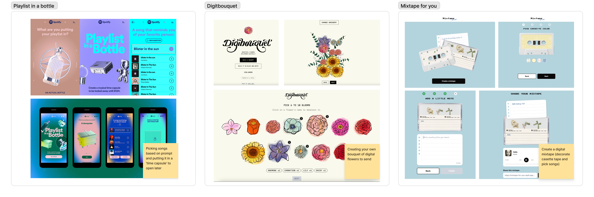

Challenge
Epistolary communication is communication through letters and personal written messages. I’ve always been drawn to how intentional and personal it feels compared to the fast-paced communication we’re used to online. It's a huge passion and hobby of mine, and it made me curious if others still do it.
Problem
Explore how people engage with epistolary communication in a digital-first world, and identify opportunities to make the experience feel more approachable and engaging.
Solution
Create a writing experience that helps people ease into personal expression through guidance and interaction.
DISCOVER
Through academic research, a common theme across papers I found was that:
DEFINE
So I asked questions in hopes to learn more about: maybe any memorable messages, rituals/motivations, what they talk about, and preferred mediums of communications.

Synthesising interview responses
I noticed two things about this audience:
Habits
They likes to write letters but rarely do; usually only for birthdays, goodbyes, or special occasions.
Viewed as very formal and serious.
Structure
Rely on familiar formats when writing letters, providing guidance.
They type a draft before committing to writing.
These people are creative individuals who enjoy writing letters but find traditional formats too formal or uninspiring.
How might we...
CLARIFY
I had a difficult time coming up with the solution. I initially wanted to build a website, but it felt a bit ironic for a project encouraging more intentional, physical-feeling writing.
I took inspiration from online experiences and this became a turning point. Instead of forcing a fixed solution, I started thinking about how an experience could feel more like guidance than output.

From there, the focus shifted:
Solution
A core experience that prioritises reflection and guidance (e.g. through prompts) through an interactive website
Now
CONCEPTUALISE

Initial wireframes to figure out the flow and structure of the experience

Lofi prototype

Experimenting with Rive to create micro-interactions
OUTCOME
The idea gives you playful, casual prompts that make writing feel easy and kind of enjoyable. You can write to someone else or yourself, and the flow is simple and relaxed, like you’re just having a little reflective moment. It’s designed to feel light and a bit delightful, with features like “continue writing,” archiving drafts, and rotating prompts to keep things interesting.

REFLECTION
reflection...